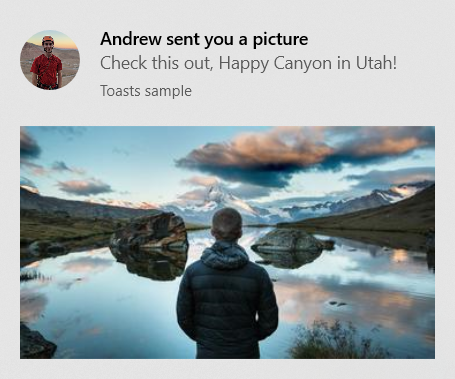
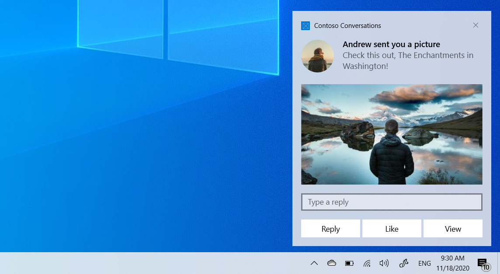

Send a local app notification from a C# app
An app notification is a message that your app can construct and deliver to your user while they are not currently inside your app.

This quickstart walks you through the steps to create, deliver, and display a Windows 10 or Windows 11 app notification using rich content and interactive actions. This quickstart uses local notifications, which are the simplest notification to implement. All types of apps (WPF, UWP, WinForms, console) can send notifications!
Note
The term "toast notification" is being replaced with "app notification". These terms both refer to the same feature of Windows, but over time we will phase out the use of "toast notification" in the documentation.
Step 1: Install NuGet package
Within your Visual Studio solution, right click your project, click "Manage NuGet Packages..." and search for and install the Microsoft.Toolkit.Uwp.Notifications NuGet package version 7.0 or greater.
Important
.NET Framework desktop apps that still use packages.config must migrate to PackageReference, otherwise the Windows SDKs won't be referenced correctly. In your project, right-click on "References", and click "Migrate packages.config to PackageReference".
.NET Core 3.0 WPF apps must update to .NET Core 3.1, otherwise the APIs will be absent.
.NET apps must use one of the Windows TFMs, otherwise the app notification sending and management APIs like Show() will be missing. Set your TFM to net6.0-windows10.0.17763.0 or later.
Our code sample will use this package. This package allows you to create app notifications without using XML, and also allows desktop apps to send app notifications.
Step 2: Send an app notification
In Windows 10 and Windows 11, your app notification content is described using an adaptive language that allows great flexibility with how your notification looks. For more information, see the App notification content documentation.
We'll start with a simple text-based notification. Construct the notification content (using the Notifications library), and show the notification! Note that the namespace is Microsoft.Toolkit.Uwp.Notifications.

// Requires Microsoft.Toolkit.Uwp.Notifications NuGet package version 7.0 or greater
new ToastContentBuilder()
.AddArgument("action", "viewConversation")
.AddArgument("conversationId", 9813)
.AddText("Andrew sent you a picture")
.AddText("Check this out, The Enchantments in Washington!")
.Show(); // Not seeing the Show() method? Make sure you have version 7.0, and if you're using .NET 6 (or later), then your TFM must be net6.0-windows10.0.17763.0 or greater
Try running this code and you should see the notification appear!
Step 3: Handle activation
After showing a notification, you likely need to handle the user clicking the notification (whether that means bringing up specific content after the user clicks it, opening your app in general, or performing an action when the user clicks the notification).
The steps for handling activation differ for UWP, and for packaged and unpackaged desktop apps.
First, in your Package.appxmanifest, add:
- Declaration for xmlns:com
- Declaration for xmlns:desktop
- In the IgnorableNamespaces attribute, com and desktop
- desktop:Extension for windows.toastNotificationActivation to declare your toast activator CLSID (using a new GUID of your choice).
- MSIX only: com:Extension for the COM activator using the GUID from step #4. Be sure to include the
Arguments="-ToastActivated"so that you know your launch was from a notification
Package.appxmanifest
<!--Add these namespaces-->
<Package
...
xmlns:com="http://schemas.microsoft.com/appx/manifest/com/windows10"
xmlns:desktop="http://schemas.microsoft.com/appx/manifest/desktop/windows10"
IgnorableNamespaces="... com desktop">
...
<Applications>
<Application>
...
<Extensions>
<!--Specify which CLSID to activate when toast clicked-->
<desktop:Extension Category="windows.toastNotificationActivation">
<desktop:ToastNotificationActivation ToastActivatorCLSID="replaced-with-your-guid-C173E6ADF0C3" />
</desktop:Extension>
<!--Register COM CLSID LocalServer32 registry key-->
<com:Extension Category="windows.comServer">
<com:ComServer>
<com:ExeServer Executable="YourProject\YourProject.exe" Arguments="-ToastActivated" DisplayName="Toast activator">
<com:Class Id="replaced-with-your-guid-C173E6ADF0C3" DisplayName="Toast activator"/>
</com:ExeServer>
</com:ComServer>
</com:Extension>
</Extensions>
</Application>
</Applications>
</Package>
Then, in your app's startup code (App.xaml.cs OnStartup for WPF), subscribe to the OnActivated event.
// Listen to notification activation
ToastNotificationManagerCompat.OnActivated += toastArgs =>
{
// Obtain the arguments from the notification
ToastArguments args = ToastArguments.Parse(toastArgs.Argument);
// Obtain any user input (text boxes, menu selections) from the notification
ValueSet userInput = toastArgs.UserInput;
// Need to dispatch to UI thread if performing UI operations
Application.Current.Dispatcher.Invoke(delegate
{
// TODO: Show the corresponding content
MessageBox.Show("Toast activated. Args: " + toastArgs.Argument);
});
};
When the user clicks any of your notifications (or a button on the notification), the following will happen...
If your app is currently running...
- The ToastNotificationManagerCompat.OnActivated event will be invoked on a background thread.
If your app is currently closed...
- Your app's EXE will be launched and
ToastNotificationManagerCompat.WasCurrentProcessToastActivated()will return true to indicate the process was started due to a modern activation and that the event handler will soon be invoked. - Then, the ToastNotificationManagerCompat.OnActivated event will be invoked on a background thread.
Step 4: Handle uninstallation
You don't need to do anything! When MSIX apps are uninstalled, all notifications and any other related resources are automatically cleaned up.
Add images
You can add rich content to notifications. We'll add an inline image and a profile (app logo override) image.
Note
Images can be used from the app's package, the app's local storage, or from the web. As of the Fall Creators Update, web images can be up to 3 MB on normal connections and 1 MB on metered connections. On devices not yet running the Fall Creators Update, web images must be no larger than 200 KB.
Important
Http images are supported only in packaged apps that have the internet capability in their manifest. Unpackaged apps don't support http images; you must download the image to your local app data, and reference it locally.

// Construct the content and show the toast!
new ToastContentBuilder()
...
// Inline image
.AddInlineImage(new Uri("https://picsum.photos/360/202?image=883"))
// Profile (app logo override) image
.AddAppLogoOverride(new Uri("ms-appdata:///local/Andrew.jpg"), ToastGenericAppLogoCrop.Circle)
.Show();
Add buttons and inputs
You can add buttons and inputs to make your notifications interactive. Buttons can launch your foreground app, a protocol, or your background task. We'll add a reply text box, a "Like" button, and a "View" button that opens the image.

int conversationId = 384928;
// Construct the content
new ToastContentBuilder()
.AddArgument("conversationId", conversationId)
...
// Text box for replying
.AddInputTextBox("tbReply", placeHolderContent: "Type a response")
// Buttons
.AddButton(new ToastButton()
.SetContent("Reply")
.AddArgument("action", "reply")
.SetBackgroundActivation())
.AddButton(new ToastButton()
.SetContent("Like")
.AddArgument("action", "like")
.SetBackgroundActivation())
.AddButton(new ToastButton()
.SetContent("View")
.AddArgument("action", "viewImage")
.AddArgument("imageUrl", image.ToString()))
.Show();
The activation of foreground buttons are handled in the same way as the main notification body (your App.xaml.cs OnActivated will be called).
Note that arguments added to the top-level app notification (like conversation ID) will also be returned when the buttons are clicked, as long as buttons use the AddArgument API as seen above (if you custom assign arguments on a button, the top-level arguments won't be included).
Handle background activation
For desktop applications, background activations are handled the same as foreground activations (your OnActivated event handler will be triggered). You can choose to not show any UI and close your app after handling activation.
Set an expiration time
In Windows 10, all app notifications go in Action Center after they are dismissed or ignored by the user, so users can look at your notification after the popup is gone.
However, if the message in your notification is only relevant for a period of time, you should set an expiration time on the app notification so the users do not see stale information from your app. For example, if a promotion is only valid for 12 hours, set the expiration time to 12 hours. In the code below, we set the expiration time to be 2 days.
Note
The default and maximum expiration time for local app notifications is 3 days.
// Create toast content and show the toast!
new ToastContentBuilder()
.AddText("Expires in 2 days...")
.Show(toast =>
{
toast.ExpirationTime = DateTime.Now.AddDays(2);
});
Provide a primary key for your notification
If you want to programmatically remove or replace the notification you send, you need to use the Tag property (and optionally the Group property) to provide a primary key for your notification. Then, you can use this primary key in the future to remove or replace the notification.
To see more details on replacing/removing already delivered app notifications, please see Quickstart: Managing toast notifications in action center (XAML).
Tag and Group combined act as a composite primary key. Group is the more generic identifier, where you can assign groups like "wallPosts", "messages", "friendRequests", etc. And then Tag should uniquely identify the notification itself from within the group. By using a generic group, you can then remove all notifications from that group by using the RemoveGroup API.
// Create toast content and show the toast!
new ToastContentBuilder()
.AddText("New post on your wall!")
.Show(toast =>
{
toast.Tag = "18365";
toast.Group = "wallPosts";
});
Clear your notifications
Apps are responsible for removing and clearing their own notifications. When your app is launched, we do NOT automatically clear your notifications.
Windows will only automatically remove a notification if the user explicitly clicks the notification.
Here's an example of what a messaging app should do…
- User receives multiple app notifications about new messages in a conversation.
- User taps one of those notifications to open the conversation.
- The app opens the conversation and then clears all notifications for that conversation (by using RemoveGroup on the app-supplied group for that conversation).
- User's Action Center now properly reflects the notification state, since there are no stale notifications for that conversation left in Action Center.
To learn about clearing all notifications or removing specific notifications, see Quickstart: Managing toast notifications in action center (XAML).
ToastNotificationManagerCompat.History.Clear();